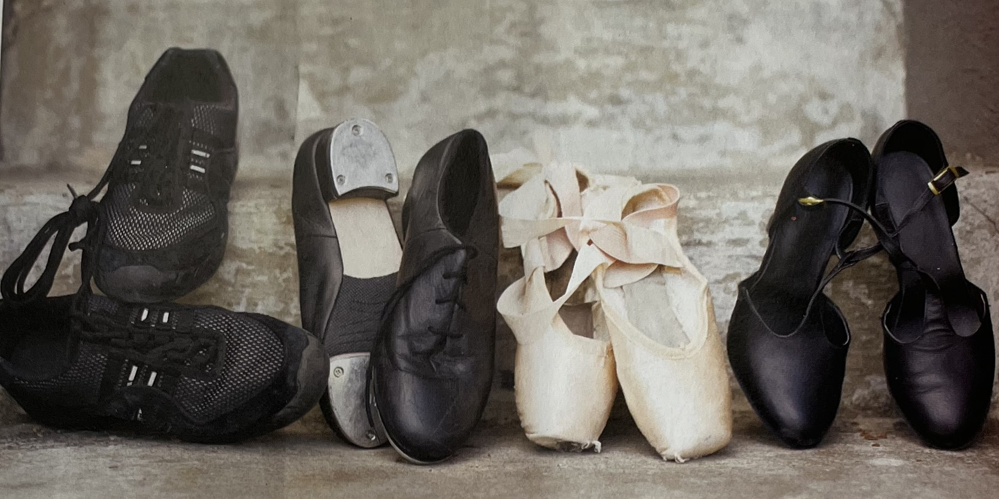

¡A BAILAR!
El movimiento rítmico tiene muchos beneficios... ¡Y, además, es superdivertido!

Por G.B. Hernandez
Si no te gusta ir al gimnasio y te cuesta mucho trabajo seguir un plan de ejercicios por tu cuenta, te gustará saber que existe una fabulosa opción para ponerte en forma: ¡bailar! Pero esto no son los únicos beneficios de la danza. El movimiento rítmico te beneficia y te enriquece de muchas maneras. Aquí te dejamos 10 buenas razones para mover el esqueleto:
- Con una clase de baile de 30 minutos quemarás entre 130 y 250 calorías, casi lo mismo que al correr.
- De acuerdo con un completo estudio publicado en el periódico norteamericano The New England Journal of Medicine, el baile puede aumentar la memoria y evitar la demencia senil.
- Un estudio encontró que la danza estimula el hipocampo, la parte del cerebro que controla la memoria.
- Otro estudio demostró que las personas que bailan regularmente mostraron menos síntomas de depresión y más vitalidad.
- Bailar es muy bueno para la salud en general. A menos que tengas una contraindicación médica, fortalece tus músculos, mejora la circulación y ayuda a controlar el peso.
- El baile estimula la flexibilidad de todo tu cuerpo y aumenta tus niveles de energía.
- Tomar una clase de baile es una buena forma de hacer nuevos amigos.
- La danza es muy buena para los huesos y ayuda a mantener la densidad ósea, reduciendo el riesgo de sufrir osteoporosis.
- El baile te ayudará a mejorar tu coordinación.
- Bailar te da más confianza en tus habilidades y aumenta tu autoestima. Además, ¡es superdivertido!